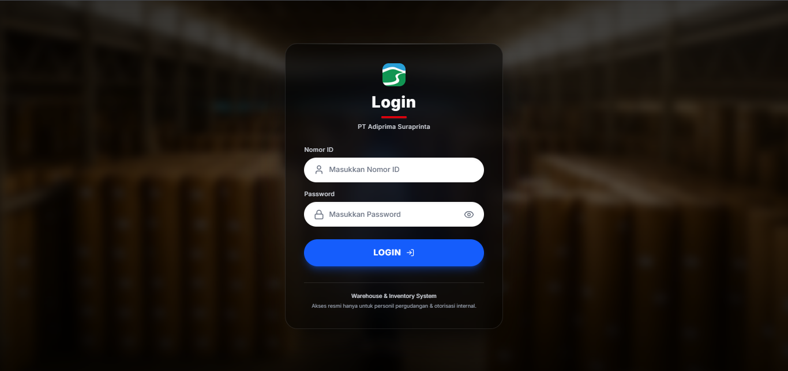
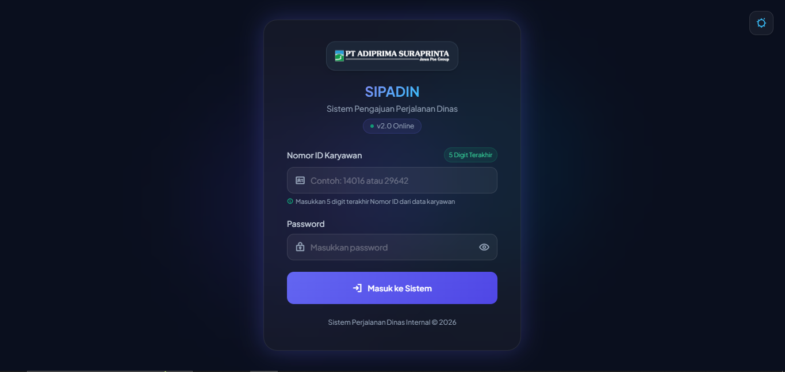

Fahad Usman
Fullstack Web Developer & Go Backend Specialist
Mahasiswa D4 Teknik Informatika Universitas Airlangga (Semester 6) yang berfokus pada Fullstack Web Development dengan pengalaman kerja praktik (PKL) membangun sistem informasi perusahaan. Memiliki keahlian teknis dalam membangun sistem backend berkinerja tinggi menggunakan Go (Golang) serta aplikasi web responsif menggunakan React, Tailwind CSS, dan basis data MySQL, PostgreSQL, serta Microsoft SQL Server.
Terbukti mampu merancang aplikasi web analitik inventory gudang terpadu dan sistem digitalisasi pengajuan perjalanan dinas multi-tier, serta memiliki kepemimpinan yang kokoh sebagai Kepala Divisi PSDM di organisasi kemahasiswaan.

Fahad Usman
Surabaya, ID 🇮🇩
PT Adiprima Suraprinta
PKL Fullstack Web Dev
High-Concurrency Go
Fast RAM Cache <10ms
Pengalaman Kerja
Implementasi solusi web enterprise skala korporasi pada lingkungan industri manufaktur kertas.
Fullstack Web Developer Intern (PKL)
Rancang Bangun Platform Intelijen Inventaris Gudang & Digitalisasi Pengajuan Perjalanan Dinas Perusahaan
Web Analisis Data Inventory Gudang
Merancang dan membangun aplikasi web analitik untuk mengolah, memvisualisasikan, dan memantau pergerakan stok barang gudang secara akurat bagi divisi PPIC dan manajemen eksekutif.
Optimasi Kueri & Pelaporan Inventory
Mengintegrasikan basis data relasional untuk mengotomatisasi rekapitulasi ketersediaan barang dan mempercepat analisis tren distribusi stok secara efisien dan konsisten.
Web Pengajuan Perjalanan Dinas
Mengembangkan sistem informasi berbasis web (SIPADIN v2.0) untuk mendigitalisasi alur pengajuan, verifikasi persetujuan berjenjang (multi-tier approval), dan pelacakan surat perjalanan dinas.
Efisiensi Administrasi & Otorisasi
Menerapkan manajemen hak akses pengguna (Role-Based Access Control / RBAC) serta pembuatan dokumen surat jalan otomatis guna memangkas waktu birokrasi manual dan meningkatkan kepatuhan operasional.
Karya & Proyek Terpilih
Platform skala korporasi dengan arsitektur backend berkinerja tinggi, concurrency control, dan antarmuka web modern.

Adiprima — One Inventory Dashboard
Pengembangan platform analitik dan intelijen inventaris terpadu (real-time) bagi divisi PPIC dan manajemen eksekutif untuk memantau siklus stok bahan baku, bahan kimia, suku cadang, hingga barang jadi (Finished Goods).
Dasbor eksekutif interaktif (hybrid chart & table), pemantauan stok Roll & Sheeter, analisis umur stok (Multi-Bucket Aging), peringatan dini batas aman (Safety Stock), Kiosk Mode untuk display pabrik, serta ekspor laporan CSV.
Otorisasi akses ketat berbasis departemen (PPIC), kalkulasi otomatis margin keamanan stok (End vs Safety Gap), klasifikasi aging stok metode FIFO, serta penghitungan persentase utilisasi kapasitas gudang secara presisi.
Implementasi in-memory RAM cache dengan background pre-warming (waktu respons <10 ms), proteksi race condition dengan sync.Mutex & SingleFlight pada Stored Procedure SQL Server, serta kompresi Gzip yang memangkas beban transfer data 85–90%.

SIPADIN v2.0 — Pengajuan Perjalanan Dinas
Pengembangan aplikasi web enterprise untuk mendigitalisasi dan mengotomatisasi siklus pengajuan perjalanan dinas (SPPD) karyawan maupun rombongan, mulai dari estimasi biaya hingga cetak dokumen resmi.
Multi-tier approval workflow 5 tingkat (Pemohon → Manager → HRGA → Finance → Direksi) berbasis RBAC, integrasi notifikasi persetujuan WhatsApp ke Direksi, cetak otomatis SPPD & Surat Tugas, serta pembatasan akses login berdasarkan jam operasional kantor.
Mesin kalkulasi plafon biaya real-time (uang makan, uang saku, hotel, transportasi berbasis jarak KM/durasi jam, pemetaan 6 zona area & golongan jabatan), pemisahan hak biaya individu vs rombongan, serta deteksi otomatis pelanggaran anggaran (MELEBIHI_PLAFON).
Penerapan immutable financial ledger snapshot pada rincian biaya agar kebal terhadap perubahan tarif masa depan, sanitasi input SQL Server, database connection pooling, audit trail log persetujuan, serta validasi waktu ganda antara server (WIB) dan klien.
Pendidikan & Kredensial
Fondasi teoritis rekayasa perangkat lunak, sistem basis data, dan standar kompetensi profesional.
Universitas Airlangga
D4 Teknik Informatika — Fakultas Vokasi
Mempelajari arsitektur perangkat lunak komprehensif, desain basis data relasional tingkat lanjut, pemrograman sistem backend berkinerja tinggi, serta integrasi middleware enterprise.
Kemampuan & Validasi Resmi
Kemahiran bahasa Inggris teknikal dalam memahami dokumentasi standar industri, penulisan kode, dan arsitektur perangkat lunak.
Data Classification and Summarization Using IBM Granite
Penguasaan model AI IBM Granite untuk pemrosesan klasifikasi data teks, ekstraksi informasi, dan peringkasan konten terstruktur.
Pengalaman Organisasi
Mengasah kapabilitas manajerial, pengembangan sumber daya tim, dan tata kelola program kerja berskala besar.
Kepala Divisi PSDM
Himpunan Mahasiswa Teknik Informatika — Universitas Airlangga
Perencanaan & Eksekusi Program
Bertanggung jawab penuh dalam merencanakan dan mengeksekusi program pengembangan soft skill dan hard skill bagi seluruh anggota himpunan secara terstruktur.
Koordinasi Tim & Proker Besar
Mengoordinasi anggota divisi dalam pelaksanaan program kerja besar, memastikan setiap target dan timeline tercapai tepat waktu dengan standar eksekusi tinggi.
Evaluasi Produktivitas Berkala
Melakukan evaluasi berkala terhadap kinerja internal organisasi guna menjaga iklim kerja produktif, transparan, dan berkelanjutan di dalam tim.
Keahlian & Technical Skills
Kombinasi bahasa pemrograman, framework modern, arsitektur basis data, dan konsep rekayasa perangkat lunak.
Programming Languages
Bahasa pemrograman inti
Goroutines, Channels, sync.Mutex, SingleFlight, High Concurrency.
ES6+, DOM Manipulation, Async/Await, Fetch API, Modular Code.
HTML5 Semantic, Web Accessibility (ARIA), Form Validation.
Frameworks & Runtime
Front-end & back-end frameworks
Hooks, Component Lifecycle, Recharts data visual, Vite integration.
Middleware, routing, high throughput, sub-10ms response times.
Bento grid styling, responsive UI, micro-interactions, dark accents.
Package management (NPM/Yarn), build tooling, server scripts.
Databases
Penyimpanan & Integritas Relasional
Schema design, normalisasi 1NF-3NF, indexing kunci asing, query tuning.
ACID compliance, complex joins, data integrity, transactional safety.
Stored Procedures, cross-database joins, connection pooling.
Tools & Concepts
Konsep arsitektur & perkakas
RESTful API, MVC Architecture, CRUD, JWT Auth, Middleware, Database Design, Password Hashing, RBAC.
In-Memory RAM Caching, sync.Mutex, SingleFlight, Immutable Ledgers.
Git/GitHub, Postman, Vite, Selenium, Scikit-learn.
Mulai Kolaborasi
Punya peluang kerja sama, tawaran proyek web/backend, atau diskusi teknis? Mari hubungi saya.
Hubungi Langsung
Terbuka untuk posisi full-time, part-time, kontrak proyek independen, maupun freelance.
Formulir Pesan Cepat
Kirimkan rincian kebutuhan proyek atau tawaran kerja sama Anda di bawah ini.